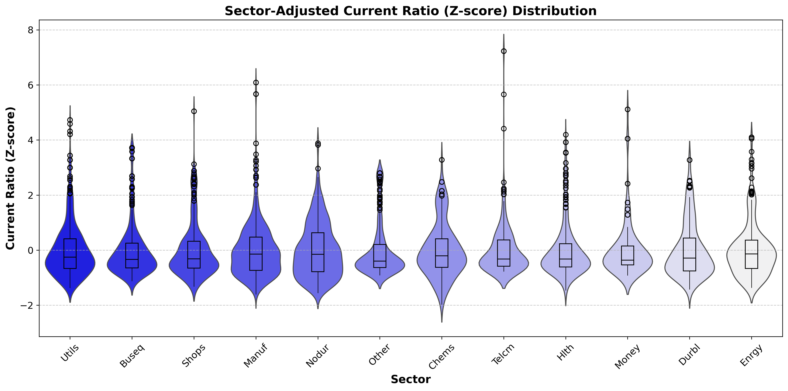
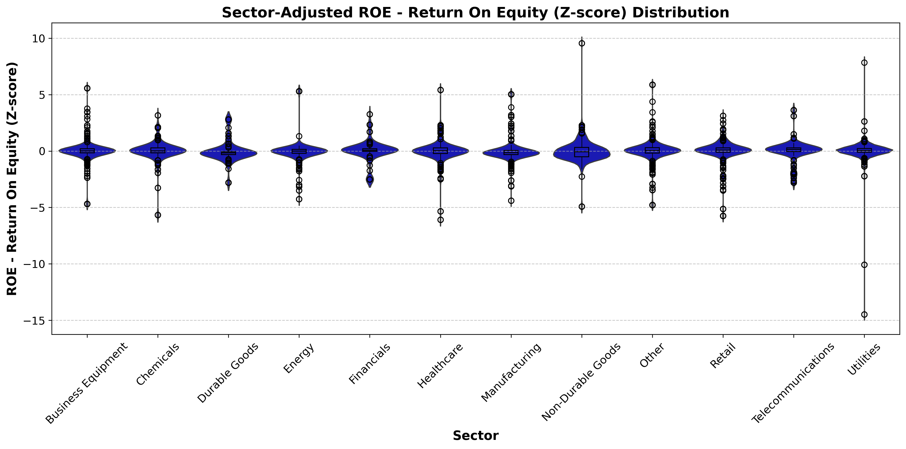
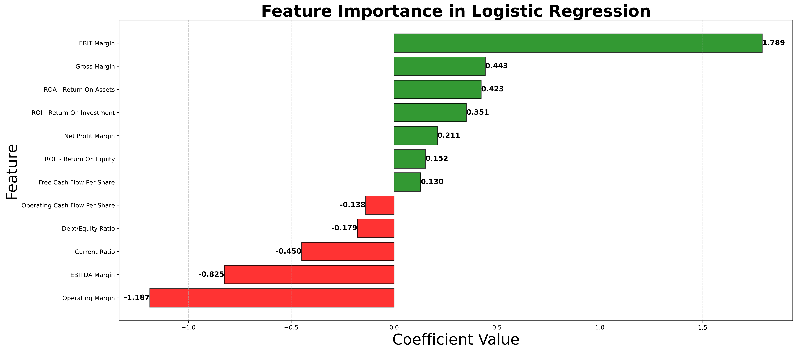

Explore trends, key financial ratios, and feature importance in credit ratings.
Understanding Corporate Credit Ratings
Corporate credit ratings play a crucial role in financial markets, influencing investment decisions, borrowing
costs, and overall economic stability.
Issued by agencies such as Standard & Poor’s, Moody’s, and Fitch, these ratings assess a company’s
creditworthiness based on financial performance, debt levels,
and other key factors.
Investors, lenders, and policymakers rely on credit ratings to evaluate the financial health of companies. A
high credit rating (e.g., AAA, AA) indicates strong
financial stability and lower risk, while lower ratings (e.g., BB, B, CCC) suggest higher default risk.
Understanding what drives these ratings helps businesses
optimize their financial strategies and aids investors in making informed decisions.
Our project analyzes corporate credit ratings across different industries, identifying key financial ratios that
impact ratings and evaluating predictive models
for rating classification. Through data visualization and machine learning, we provide insights into financial
indicators that influence creditworthiness.
Data Overview
This project is based on a dataset containing 678 corporate credit ratings from 2010 to
2016, sourced from
Kaggle.
The dataset includes:
Company details: Name, industry sector, and assigned credit rating.
Rating agency information: Ratings from Standard & Poor’s, Moody’s, or Fitch.
Financial ratios: Debt/Equity Ratio, Current Ratio, EBIT Margin, Operating Margin, Return
on Assets (ROA), and others.
Key Financial Ratios Analyzed
To better understand credit ratings, we focus on the following financial ratios, normalized using
Z-scores to enable comparisons across different sectors:
Current Ratio: Assesses liquidity by comparing current assets to liabilities.
EBIT Margin: Evaluates operational profitability before interest and taxes.
Operating Margin: Indicates overall efficiency in converting revenue into profit.
Return on Assets (ROA): Measures how effectively a company utilizes assets to generate
profit.
By analyzing these metrics, we aim to uncover which financial factors most influence corporate credit ratings
and how they vary across industries.
Sector-Based Trends in Binary Ratings
This visualization tracks the binary credit ratings of different industries over time. A binary rating of 1
represents
investment-grade ratings (BBB- and above), while a rating of 0 represents non-investment grade (BB+ and
below). By
analyzing the trends across sectors, we can observe how industries experience shifts in creditworthiness due to
macroeconomic factors, industry-specific risks, and financial performance.
Key Trends and Real-World Context
Financials (Purple Line): The sharp drop in credit ratings around 2010-2011 reflects
the
aftermath of the 2008 financial crisis, where banks and financial institutions faced declining
creditworthiness
due to exposure to subprime mortgage losses. Over time, financial institutions stabilized as regulatory
reforms
(e.g., Dodd-Frank Act) helped rebuild investor confidence.
Energy (Red Line): The gradual decline after 2014 corresponds with the oil price
crash of 2014-2016,
where crude oil prices fell drastically due to oversupply and reduced global demand. Many oil and gas
companies faced
downgrades due to declining revenues and increased debt burdens.
Healthcare (Brown Line): The steady increase in ratings between 2010-2013 aligns with
the expansion
of healthcare policies such as the Affordable Care Act (ACA) in the United States. However, towards
2015-2016,
the sector experiences mild fluctuations, likely influenced by uncertainty surrounding policy changes and
pharmaceutical pricing regulations.
This interactive visualization allows users to compare industries and analyze the impact of economic and
policy-driven
events on corporate creditworthiness. By toggling different sectors, we can better understand how financial
stability
evolves across industries.
Feature Importance Analysis by Sector
Corporate credit ratings are heavily influenced by a company’s financial health, but the importance of specific
financial
metrics varies across industries. Some sectors rely more on leverage to drive growth, while others prioritize
profitability
and liquidity. This radar chart compares key financial ratios across different industries, providing insight
into how financial
characteristics shape creditworthiness.
To determine the most influential factors in corporate credit ratings, we analyzed a range of financial metrics
using a logistic
regression model. The model assigned weights (coefficients) to each financial ratio, measuring their impact on
whether a firm
received an investment-grade rating. We standardized all financial ratios using Z-score normalization to ensure
comparability across
sectors. The final selection of the top five financial factors was based on their absolute coefficient values,
indicating the strongest
predictors of credit ratings.
The most significant features identified were Debt/Equity Ratio, Current Ratio, EBIT Margin, Operating Margin,
and Return on Assets (ROA).
A high Debt/Equity Ratio suggests greater financial leverage, which can be riskier depending on a company’s
ability to service debt.
The Current Ratio reflects liquidity and a firm’s short-term financial stability. EBIT Margin and
Operating Margin measure
profitability before and after operational expenses, highlighting how efficiently a company generates earnings.
Return on Assets (ROA)
indicates how well a company utilizes its assets to generate profit, making it particularly relevant for
asset-intensive industries.
The radar chart allows us to see how these financial metrics vary across industries. Financial firms tend to
have high Debt/Equity Ratios,
reflecting their reliance on leverage, while Retail and Telecommunications sectors have lower ROA due to high
infrastructure costs.
Business Equipment and Manufacturing industries show higher EBIT Margins, demonstrating stronger operational
efficiency.
Meanwhile, the Energy sector tends to have volatile Operating Margins, influenced by commodity price
fluctuations.
Key Insights from the Visualization
This visualization highlights how industries prioritize different financial strategies based on their operating
environment.
The results suggest that leverage, liquidity, and profitability are the strongest predictors of
creditworthiness.
A company with high debt and low liquidity is more likely to receive a lower rating, while firms with strong
profit margins
and asset efficiency tend to secure higher ratings. These insights provide a deeper understanding of financial
decision-making
across industries and the factors that influence corporate credit ratings.
Sector-Based Key Financial Ratios
Financial ratios provide critical insights into a company's financial health, stability, and operational
efficiency.
Here, we analyze sector-based variations in liquidity, leverage, and profitability, highlighting how
financial structure differs across industries.
We normalized financial ratios using Z-score standardization to ensure fair comparisons across sectors. Since financial
metrics vary widely by industry—capital-intensive sectors like Utilities typically have higher debt levels, while Tech
firms rely less on debt—raw values alone wouldn’t provide meaningful insights.
Why Z-score? Unlike min-max scaling, which compresses data into a fixed range, Z-score preserves the distribution and
outliers, making it ideal for financial analysis. It measures how many standard deviations a value deviates from its
sector mean, allowing us to neutralize industry-specific biases while retaining important variations.
What this enables: This transformation highlights companies that significantly deviate from sector norms, helping us
identify financial outliers and trends more effectively. It also ensures our machine learning model generalizes better,
preventing any single sector from disproportionately influencing feature importance calculations.
Hover over the images or use the arrows to explore each financial ratio.


Current Ratio (Z-Score)
The Current Ratio measures a company's ability to meet short-term obligations.
Higher values indicate stronger liquidity, crucial for sectors with volatile cash flows.
Retail and Manufacturing sectors show wider distributions, reflecting varied working capital management
strategies.
Debt/Equity Ratio (Z-Score)
The Debt/Equity Ratio represents financial leverage, indicating how much debt companies use relative
to equity.
Utilities and Telecommunications sectors tend to have higher values, aligning with their
capital-intensive business models.
In contrast, sectors like Retail and Healthcare maintain relatively stable capital structures.
ROE - Return On Equity (Z-Score)
Return on Equity (ROE) measures profitability in relation to shareholders’ equity.
Variability across sectors highlights differences in capital efficiency. Business Equipment and Durable
Goods
sectors show wider distributions, indicating a mix of high-growth firms and lower-performing outliers.
These financial ratios help explain why certain sectors experience stronger or weaker credit ratings.
The variation across industries suggests that financial structure plays a key role in credit risk assessment.
In the next section, we examine overall feature importance, summarizing the most influential factors shaping
corporate creditworthiness.
Overall Feature Importance
Building on our previous analyses of sector-based trends and financial ratios,
this visualization highlights the most influential financial metrics in determining
corporate credit ratings. By analyzing how different financial features impact
investment-grade classifications, we gain deeper insights into what truly drives creditworthiness.

Data & Model Overview
To understand the key drivers behind corporate credit ratings, we trained a Logistic Regression model
using a dataset containing financial ratios across multiple industries. Our target variable was a binary
classification
of credit ratings (0 = non-investment grade, 1 = investment grade). The features included key
profitability, liquidity,
and leverage ratios—many of which we explored earlier in our sector-based violin plots and radar chart.
Logistic regression was chosen because it allows us to quantify the influence of each financial metric
through its coefficients,
making the results highly interpretable. A positive coefficient means the feature increases the
likelihood of an investment-grade rating,
while a negative coefficient suggests a higher risk of downgrade.
Key Findings
Profitability metrics matter most: EBIT Margin (1.789), Gross Margin (0.443), and
Return on Assets (0.423)
had the strongest positive impact, reinforcing that companies with higher earnings and operational
efficiency tend to secure better ratings.
Leverage ratios influence risk: The Debt/Equity Ratio (-0.179) and Current Ratio
(-0.450) negatively correlated with
investment-grade ratings, confirming that excessive debt burdens and liquidity constraints can signal
financial instability.
Operational efficiency is a double-edged sword: While high operating performance is
usually favorable,
Operating Margin (-1.187) and EBITDA Margin (-0.825) showed a negative impact. This suggests that in
some cases, companies
prioritizing aggressive cost-cutting may do so at the expense of long-term stability.
Connecting the Dots
Earlier, our violin plots revealed sector-based differences in financial ratios, and our radar chart showed
how these features vary across industries. Now, by examining feature importance, we can pinpoint which
financial metrics
play the most decisive role across all sectors. This analysis confirms that profitability is a stronger
indicator of creditworthiness
than leverage alone, reinforcing the importance of earnings consistency in financial stability.
Why This Matters
Investors and analysts rely on credit ratings to assess financial risk. By understanding which financial
metrics carry the most weight,
stakeholders can make more informed decisions about corporate stability. The findings suggest that while
debt levels are important,
profitability and efficient asset utilization are more predictive of a strong credit rating.
Sector-Wise Model Performance Metrics
After analyzing the key financial features driving credit ratings, we now assess how well our model performs
across different sectors.
This visualization compares accuracy (blue), F1-score (orange), precision (red), and recall (turquoise) for
each industry,
providing insight into where the model performs well and where improvements may be needed.
Understanding the Metrics
Each sector's credit rating predictions are evaluated using multiple performance metrics:
Accuracy (blue): Measures overall correctness but may not reflect class imbalances.
F1-score (orange): Balances precision and recall, useful for uneven class
distributions.
Precision (red): Indicates how many predicted investment-grade ratings were actually
correct.
Recall (turquoise): Measures how well the model identifies all actual investment-grade
firms.
Key Observations
Utilities and Non-Durable Goods show strong recall but lower precision, meaning the
model captures most investment-grade firms but also misclassifies more.
Financials and Durable Goods have lower recall, suggesting the model struggles to
detect all investment-grade firms in these sectors.
Energy and Healthcare sectors display a balanced F1-score, indicating a good trade-off
between precision and recall.
Connecting to Feature Importance
These performance results align closely with our feature importance findings, reinforcing how different
financial metrics
influence credit ratings across industries. The strong performance in sectors like Energy and Healthcare, where
EBIT Margin
and ROA were significant predictors, suggests that profitability plays a key role in rating assessments.
Conversely, weaker recall
in Financials and Durable Goods may indicate that credit ratings in these sectors depend more on balance sheet
strength—factors
like Debt/Equity Ratio and Current Ratio, which had lower coefficients in our model.
Additionally, sectors such as Utilities and Non-Durable Goods, which show high recall but lower precision,
suggest that while
the model is effective at identifying investment-grade firms, it may misclassify riskier firms due to overlapping
financial characteristics.
This aligns with our radar chart findings, where these sectors had similar distributions in key financial
ratios, making classification
more challenging.
These insights highlight potential refinements—sector-specific weighting adjustments or additional financial
indicators—to
better capture industry-specific rating dynamics. Further fine-tuning could enhance the model’s predictive power,
particularly for
sectors where liquidity and leverage factors are more influential than profitability metrics.
Why This Matters
Understanding where the model performs well and where adjustments are needed helps in fine-tuning
financial risk assessments.
High recall is beneficial for risk-averse investors, while high precision is crucial for strict
investment-grade classifications.
These insights can guide future improvements, such as sector-specific model adjustments or incorporating
additional financial indicators.
Summary & Future Work
This project explores corporate credit ratings by analyzing key financial ratios, sector-based trends, and
feature importance in predicting ratings. Through a combination of visualizations and model-driven analysis, we
identified key financial indicators that influence credit ratings and examined how they vary across industries.
Our analysis revealed that financial health metrics like EBIT Margin, ROA, and Gross Margin are strong positive
indicators of a company’s credit rating, while high Operating Margin and Debt/Equity Ratio tend to have a
negative impact. Sector-based trends showed varying rating patterns, with financials being more sensitive to
economic downturns, energy showing volatility, and healthcare maintaining relative stability. Additionally, our
logistic regression model confirmed that profitability metrics hold the most predictive power.
Despite these insights, our analysis is limited by the dataset’s time range and the exclusion of qualitative
factors such as market sentiment or macroeconomic conditions. Future work could incorporate time-series
analysis to track rating trends over time, explore alternative modeling techniques to improve predictive
accuracy, and integrate external economic indicators for a more comprehensive assessment.
If you are interested in this project or have insights to share, feel free to reach out:
.png)